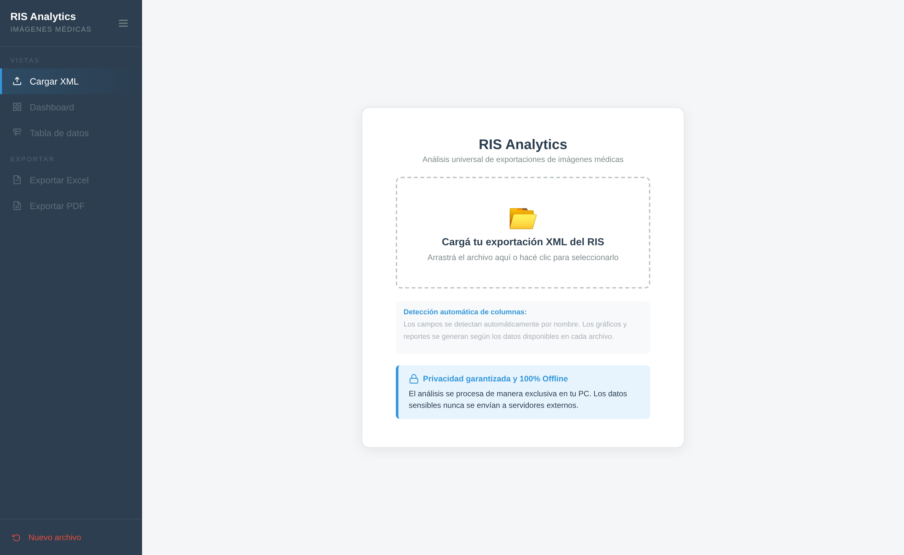
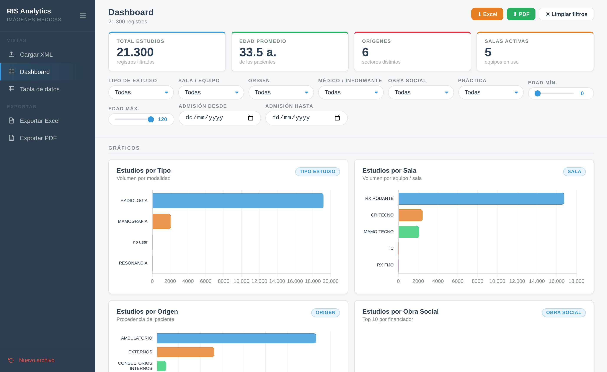
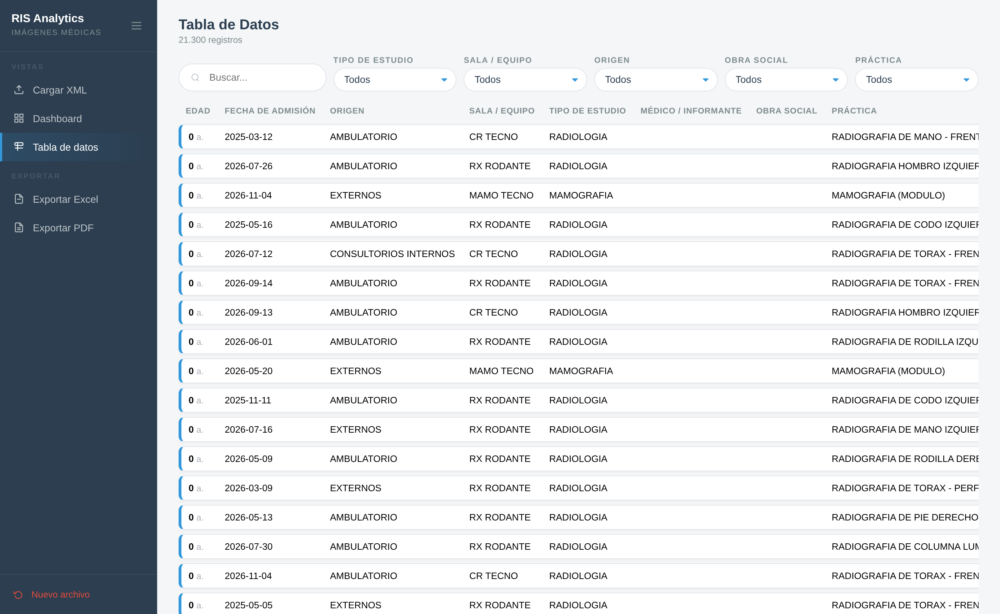
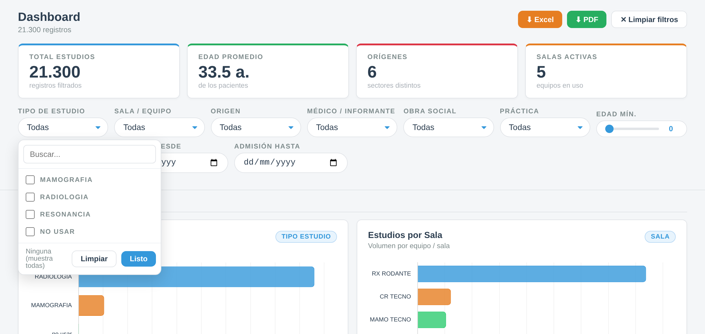
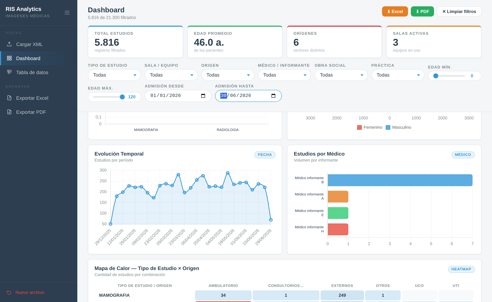
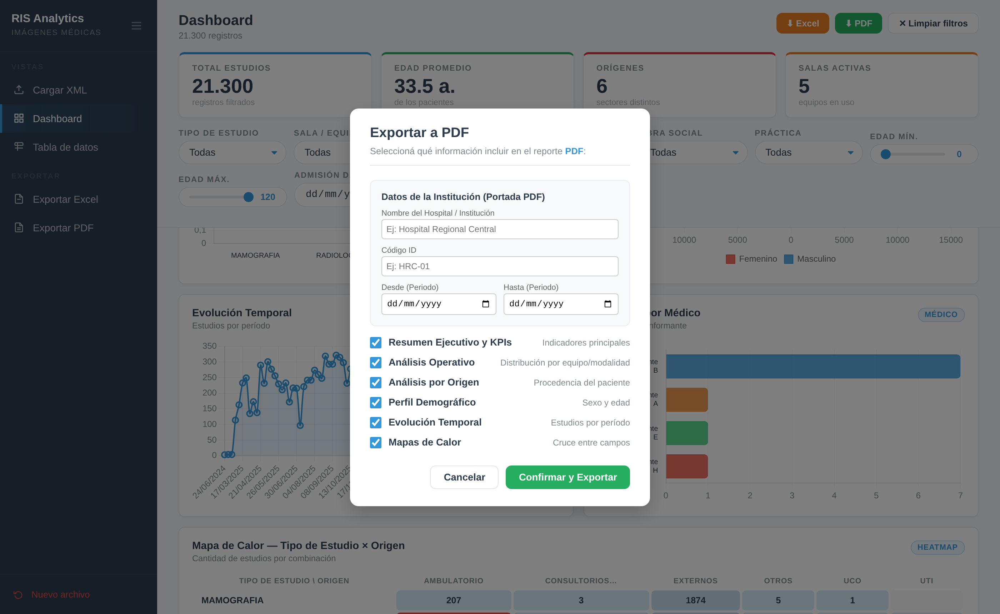

Análisis de exportaciones de Suitestensa: carga, filtros, gráficos y reportes
Autor Bioing. Ernesto Ridel
Fecha 16/11/2026
Versión RIS Analytics 1.1
Contenido
Datos a exportar desde Suitestensa
Importar y visualizar
Aplicar filtros
Exportar a Excel y PDF
Seguridad y privacidad
Para aplicacionistas: instalación y soporte
Destinada a usuarios de la aplicación y aplicacionistas responsables de su instalación y soporte.
1. Datos a exportar desde Suitestensa
Exportá la consulta de estudios en formato XML (hoja de cálculo XML). La app reconoce las columnas por su nombre, así que el orden no importa. Si falta una columna, sus filtros y gráficos simplemente no aparecen.
Columna en Suitestensa
Para qué se usa
Prioridad
Exam Date - Admitido el
Filtro por fecha de admisión y evolución temporal
Recomendada
Mode
Tipo de estudio (modalidad)
Recomendada
Origin
Origen del paciente (ambulatorio, externos, etc.)
Recomendada
Room
Sala / equipo
Recomendada
Description of examination by method
Práctica realizada
Recomendada
Médico autor del informe
Médico informante y estudios informados
Opcional
Fee/Tariff
Obra social
Opcional
Edad - Edad
Edad promedio y pirámide poblacional
Opcional
Si la exportación trae varias fechas (realización, informe, etc.), la app usa siempre la fecha de admisión. Esperá a que el archivo termine de descargarse antes de cargarlo: un XML incompleto da el error “El XML no es válido”.
2. Importar y visualizar
Abrí RIS Analytics desde el acceso directo.
En Cargar XML, arrastrá el archivo al recuadro o hacé clic para elegirlo.
La app abre el Dashboard con los datos procesados.

Figura 1. Pantalla de carga: arrastrá el XML o hacé clic para seleccionarlo.
El Dashboard muestra:
Indicadores: total de estudios, edad promedio, orígenes distintos y salas activas.
Gráficos: estudios por tipo, sala, origen, obra social, práctica y médico; totales vs. informados; pirámide poblacional, evolución temporal y mapa de calor.
Tabla de datos (menú izquierdo): el detalle fila por fila, con paginado y filtros propios.

Figura 2. Dashboard: indicadores, filtros y gráficos.

Figura 3. Tabla de datos con el detalle de cada estudio.
Para analizar otro archivo, usá Nuevo archivo (abajo a la izquierda).
3. Aplicar filtros
Los filtros están arriba del Dashboard y se combinan entre sí. Indicadores y gráficos se actualizan al instante.
Categorías (tipo de estudio, sala, origen, médico, obra social, práctica): abrí la lista, buscá y marcá uno o varios valores. Sin nada marcado se muestran todos. Limpiar desmarca ese filtro.
Edad mín. / máx.: mové los deslizadores para acotar el rango de edad.
Admisión desde / hasta: elegí las fechas del período. Con un rango activo, los estudios sin fecha quedan afuera. Si los campos se ven en gris, el archivo no trae la columna de admisión.

Figura 4. Filtro de selección múltiple con buscador.

Figura 5. Filtro por fecha de admisión (01/01/2026 a 30/06/2026): indicadores y gráficos reflejan solo ese período.
Limpiar filtros (arriba a la derecha) vuelve a mostrar todos los datos.
4. Exportar a Excel y PDF
Las exportaciones incluyen solo los datos que quedan después de aplicar los filtros. Ambas opciones están arriba a la derecha y en el menú Exportar.
Excel: marcá qué incluir (datos completos, resumen, totales por sala, origen, etc.) y confirmá. Se descarga RIS_Analytics_<fecha>.xlsx, con una hoja por sección.
PDF: completá el nombre y código de la institución y el período para la portada, elegí las secciones y confirmá. La app pregunta dónde guardar el informe.

Figura 6. Opciones de exportación a PDF.
5. Seguridad y privacidad
RIS Analytics procesa todo en la PC donde está instalada: los datos de los pacientes no se envían a ningún servidor ni se guardan en la aplicación.
Procesamiento local: el XML se lee y analiza en la memoria del equipo. No hay servidores externos, cuentas ni base de datos.
Sin almacenamiento: la app no guarda copias de los datos. Al cerrarla o cargar otro archivo, la información anterior se descarta.
Sin transferencia de datos: al abrirse, la app descarga de internet dos componentes de visualización (gráficos y Excel). Esa descarga no incluye ni envía datos de pacientes.
Distribuir la aplicación no implica compartir datos: cada instalación trabaja solo con los archivos que carga su usuario. Lo único que queda en el equipo son los Excel y PDF que el usuario decide exportar; su resguardo queda a cargo de la institución, igual que la exportación original de Suitestensa.
6. Para aplicacionistas: instalación y soporte
Requisitos
Windows 10 u 11 de 64 bits.
Google Chrome instalado: la app se abre en una ventana de Chrome.
Conexión a internet al abrir la app, para cargar los componentes de gráficos y Excel.
Instalación
Ejecutá Instalador_RIS_Analytics_v1.1.exe. No requiere permisos de administrador.
Opcionalmente, marcá la casilla para crear un acceso directo en el escritorio.
La app queda en %LOCALAPPDATA%\Programs\Tecnoimagen\RIS Analytics (o en Archivos de programa si se instala como administrador) y en el menú Inicio.
Configuración en Suitestensa
Armá una consulta de estudios con las columnas de la sección 1 y exportala en XML. Conviene guardarla como consulta predefinida para que los usuarios siempre exporten las mismas columnas.
Problemas frecuentes
Síntoma
Causa probable
Solución
“El XML no es válido”
El archivo está incompleto (se cargó antes de terminar de descargarse) o no es una exportación XML.
Esperar a que termine la descarga y volver a cargarlo. El mensaje indica la línea del error.
Filtros de admisión en gris
La exportación no incluye la fecha de admisión.
Agregar “Exam Date - Admitido el” a la consulta.
Un gráfico aparece vacío
La columna existe pero no tiene valores (por ejemplo, Fee/Tariff vacía → Obra Social).